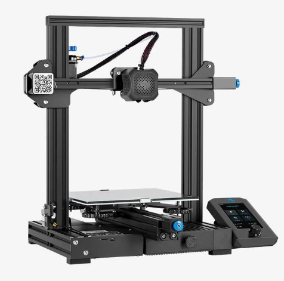

Durante más de un siglo, la fabricación se ha basado principalmente en procesos sustractivos que implican cortar, fresar o modelar materiales para obtener un producto final. Si bien son eficaces, estas técnicas generan residuos, requieren un gran número de herramientas y suelen ser inflexibles. En cambio, la fabricación aditiva (FA) construye objetos capa a capa, utilizando únicamente el material necesario. Este cambio supone más que un avance tecnológico; representa una reconsideración fundamental de cómo diseñamos, producimos y distribuimos bienes

La industria 4.0 es una nueva esfera de la industria que aparece como un resultado del surgimiento, distribución, uso y apropiación de nuevas tecnologías (tecnologías digitales y tecnologías de Internet) que permiten procesos de producción completamente automatizados donde los objetos físicos (máquinas) interactúan sin que se dé la participación humana.
El término ‘Industria 4.0' se acuñó por primera vez en la Feria de Hannover en 2011, y desde ese entonces ha atraído gran atención de académicos, profesionales, funcionarios gubernamentales y políticos de todo el mundo.
El objetivo de este documento es presentar una revisión sobre los aspectos básicos de la Industria 4.0, específicamente sobre los enfoques conceptuales para definirla; el significado de dicho concepto; y sobre los desafíos, la visión, las características y las tecnologías digitales de la Industria 4.0. Además, se abordarán aspectos relacionados con el modelo de madurez y las implicaciones de política pública para la Industria 4.0.